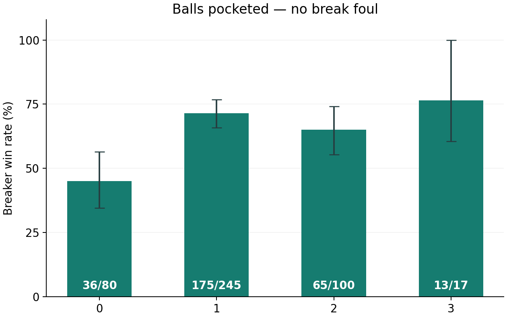
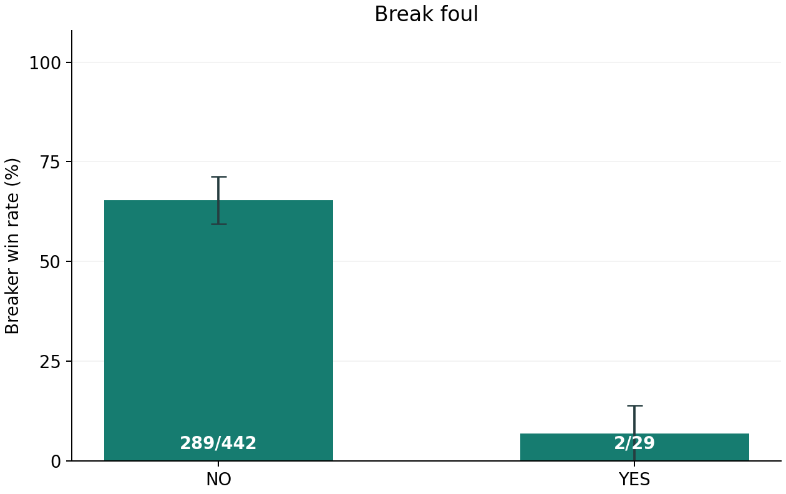
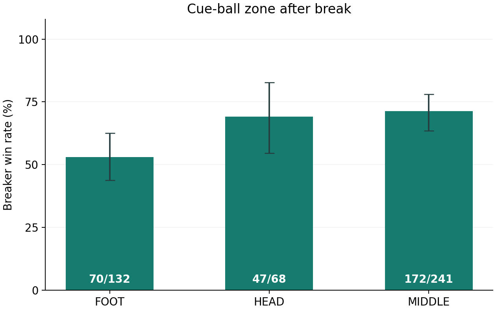
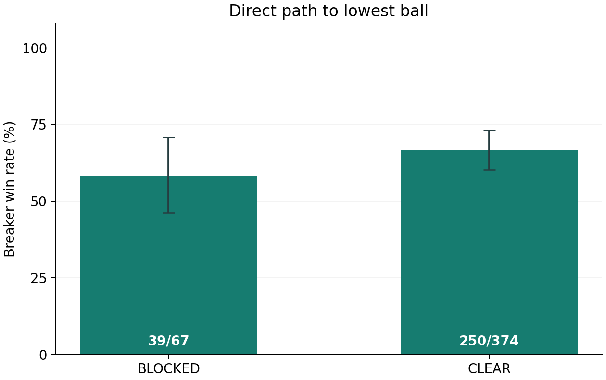

What does the break tell us about winning the rack?
Explore manually collected match observations and a model that uses the table immediately after the break. The goal is a better question—and a measurable answer.
Reports, methods and model coefficients are shared. Complete development and new-match records remain private; full results cannot be independently reproduced from the sample.
Estimate the breaker's chance of winning the rack
Use the settled layout immediately after the break. This estimator does not predict an entire match.
Do not count the cue ball as a pocketed object ball. For a cue-ball scratch, select a foul and Unknown for zone and path. Only represented feature ranges are offered.
Break fouls show the clearest difference
The breaker won 291/471 racks (61.8%) in the primary sample. With a break foul, the observed rate was 2/29 (6.9%); without one, 289/442 (65.4%). Legal dry breaks won 36/80 (45.0%), compared with 175/245 (71.4%) for legal one-ball breaks.




Error bars are 95% intervals from resampling entire matches. The ball-count chart excludes fouls; zone and path charts omit Unknown geometry. These associations do not establish causal effects.
Sample sizes and uncertainty
| Feature | Wins / racks | Win rate | 95% interval |
|---|
Two-ball breaks did not outperform one-ball breaks in this sample. The three-ball group has only 17 racks. More pocketed balls cannot be treated as a guaranteed improvement.
Methods, review and limits
Does the model beat simple baselines?
| Model | Accuracy | Brier ↓ | AUC |
|---|---|---|---|
| Training-fold win-rate baseline | 61.8% | 0.236 | — |
| Foul-only model | 67.1% | 0.217 | 0.552 |
| Five-feature model | 66.9% | 0.209 | 0.669 |
Five-fold cross-validation groups entire matches. Each evaluated prediction comes from a model that did not train on that match. Lower Brier means less probability error; AUC measures ranking. The full model improves Brier but not accuracy over the foul-only model.
What goes into the model?
Logistic regression uses object balls pocketed, break foul, cue-ball zone, direct path and the lowest remaining ball. Player identity, outcomes, timestamps, notes and push-out decisions are not inputs. The estimator above is fitted on all 471 primary racks; evaluation metrics use separate match-held-out predictions.
Head, Middle, Foot and a direct path
Head is the breaking-end quarter, Middle the central half between the second-diamond lines, and Foot the far quarter. Use the cue-ball centre; a boundary belongs to Middle. Clear means straight unobstructed contact with the lowest ball, not an available pot. Choosing a push-out or kick alone does not establish that the path was blocked.
What was reviewed?
The collector resolved 16 priority checks: 3 confirmed labels, 7 corrections and 6 confirmed missing-footage cases. All 50 racks in the preselected full-row random sample were subsequently reported PASS. These are collector reviews, not an independent audit. Six missing-footage racks remain excluded from the primary model sample. Full correction logs remain private; source timestamps are included for the 20 public sample rows.
Where might the results fail?
The sample is selected televised professional play. Players and events may appear in both cross-validation groups. New-player or new-event generalization and probability calibration have not been established. Unknown geometry is mainly associated with scratches, not a fourth table zone. Results are exploratory and do not prove causal effects.
13 of 21 new racks predicted correctly
The model and baselines were saved before the three new matches were submitted. No refitting or threshold tuning was performed.
| Model | Correct / racks | Brier ↓ | AUC |
|---|---|---|---|
| Five-feature model | 13/21 (61.9%) | 0.241 | 0.699 |
| Foul-only model | 11/21 (52.4%) | 0.267 | 0.569 |
| Constant development win rate | 9/21 (42.9%) | 0.281 | 0.500 |
Only three Premier League Pool matches; not enough for a generalization claim. Submitted video IDs differ from the registered IDs, with both retained in the source record. Labels are collector-provided and have not been independently verified. The development model remains unchanged.
Reports, code and data
A selective English release with 20 illustrative rack records. Complete observation tables and row-level predictions remain private.
Selective English release · AI assisted programming and documentation; observations were collected manually. GitHub publication has not yet occurred. The hosted preview remains owner-private.